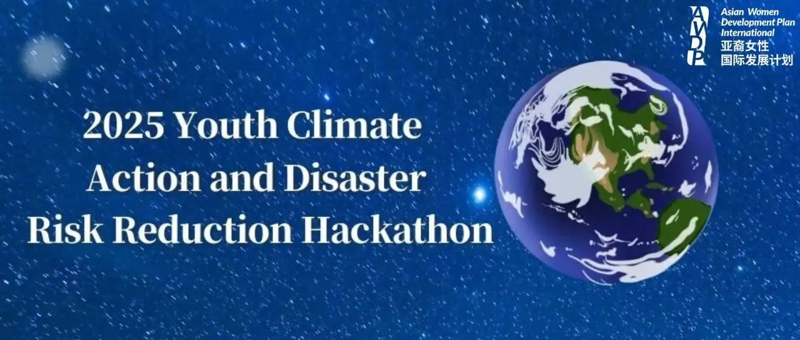
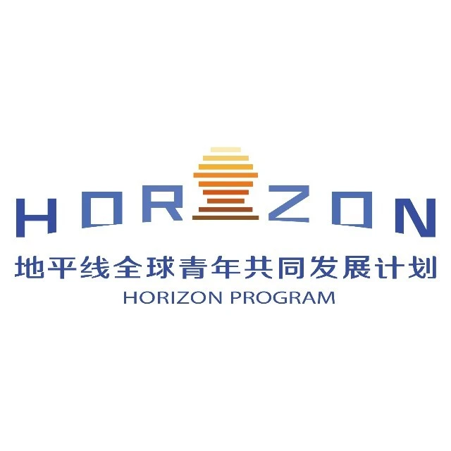
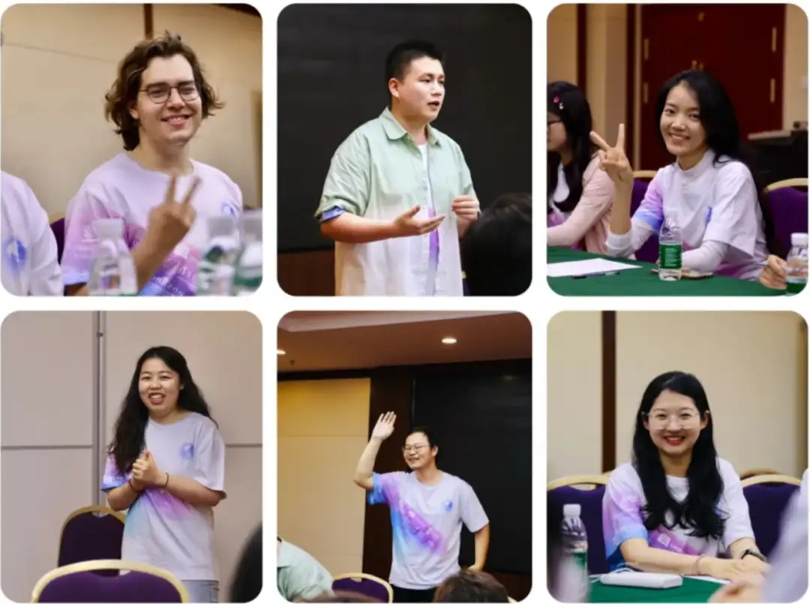
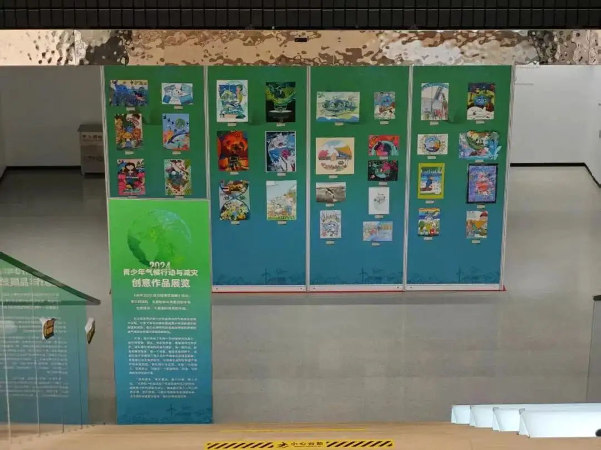
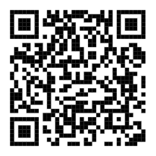
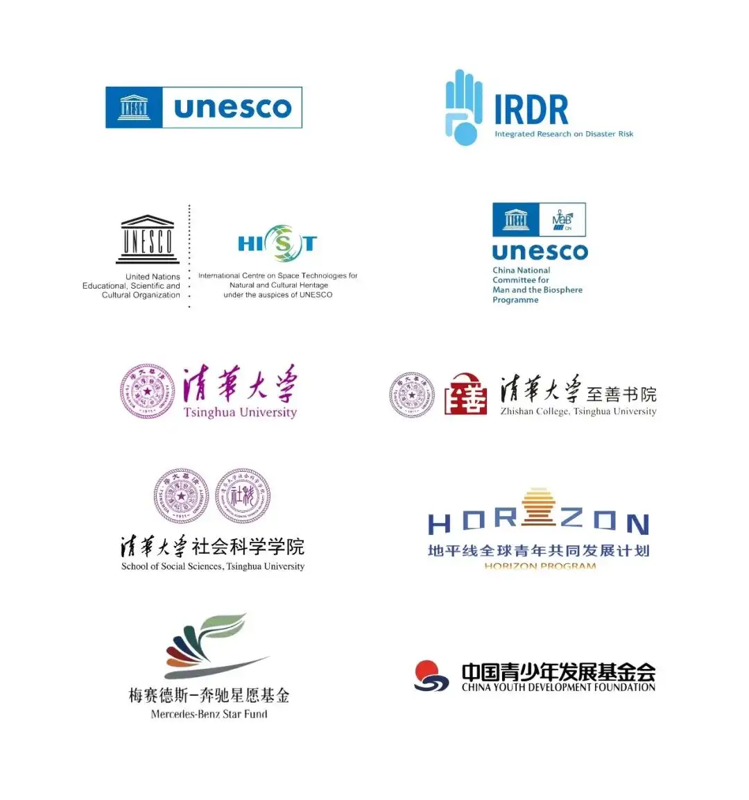
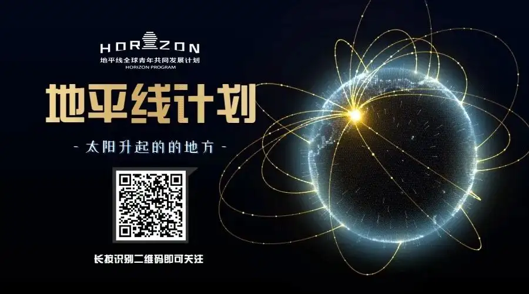

以下文章来源于地平线Horizon计划 ，作者horizon计划

地平线计划汇集国际组织、全球著名高校、中央和地方各级党政机关、国内外著名企业和金融机构等众多高端优质资源，共同打造的全球青年共同发展项目。目前成员分布于众多国际组织、国内外顶级高校以及政府部门、头部企业和社会组织。


Background
Climate change and disaster risk have emerged as two of the most pressing challenges facing the global community. The increasing frequency of extreme weather events, ecosystem degradation, and rising sea levels pose grave threats not only to the sustainability of the natural environment but also to the safety, stability, and long-term development of human societies. According to the Intergovernmental Panel on Climate Change (IPCC), failure to take immediate and decisive action could result in global warming surpassing the critical 1.5°C threshold, leading to irreversible and catastrophic consequences. Moreover, the intersection of climate crises and disaster risks is exacerbating multidimensional global challenges, including food insecurity, public health concerns, and regional instability. Addressing this compound risk landscape calls for systemic innovation, strengthened multilateral cooperation, and inclusive global engagement.
Young people are at the heart of climate action and disaster risk reduction. As one of the most dynamic, creative, and solution-oriented constituencies, youth not only bear responsibility for the future but are also actively shaping it—empowered by technology, interdisciplinary approaches, and a global mindset. From championing climate justice and designing AI-driven disaster mitigation tools to building resilient cities and promoting sustainable lifestyles, youth innovators are redefining what is possible through action and ingenuity. Their participation not only accelerates the translation of solutions into practice but also catalyzes social awareness, strengthens public engagement, and informs policy transformation—injecting new momentum and hope into global climate governance.
Event Information
I. Overview
The 2025 Youth Climate Action and Disaster Risk Reduction Innovation Initiative is jointly initiated by the UNESCO Beijing Office, the Integrated Research on Disaster Risk (IRDR), the Chinese National Committee for the Man and the Biosphere Programme (MAB China), the International Centre on Space Technologies for Natural and Cultural Heritage under the auspices of UNESCO (HIST), the School of Social Sciences and Zhishan College of Tsinghua University, and the Horizon Global Youth Development Program. Under the theme "Empowering Youth for a Healthy Planet" the initiative focuses on key issues in the fields of climate action and disaster risk reduction. It invites renowned experts from universities, research institutions, international organizations, and top-tier industry enterprises to deliver public lecture series aimed at raising awareness among youth about climate change and disaster risks, while promoting knowledge-sharing on climate and disaster resilience. The initiative includes a Creative Video Campaign to encourage young people to express and disseminateClimate Action and Disaster Risk Reduction their reflections and practices on climate action and disaster risk reduction through video storytelling. It also features a Youth Innovation Hackathon, which guides youth participants to form collaborative teams and apply their disciplinary expertise and practical experience to design and prototype innovative, project-based solutions. Building on these efforts, the program also seeks to further develop a global youth climate and disaster action network, convening young talents committed to climate-related work and mobilizing youth-driven contributions to the shared goal of a healthier, more resilient planet.
As a core component of the initiative, the Youth Climate Action and Disaster Risk Reduction Hackathon aims to create a global platform for youth collaboration and problem-solving. It encourages youth teams to respond to contemporary climate and disaster challenges through innovation, using their knowledge and creativity to explore cutting-edge solutions for climate adaptation and disaster preparedness. Participants will form interdisciplinary teams, or join with teams already in the incubation or entrepreneurial stage, and work under three main tracks. Drawing on their academic expertise, research outcomes, and real-world experience, they will collaboratively design and present solutions. Teams are encouraged to adopt both qualitative and quantitative approaches, and to propose innovative solutions in areas such as technological innovation, social support systems, and legal frameworks, with an emphasis on operational feasibility and real-world impact. The Hackathon aims to contribute to the global advancement of climate change mitigation and disaster risk reduction through youth-driven action and innovation.

II. Event Schedule
|01 Three Competition Tracks
1. Resilient Cities and Innovative Climate Adaptation in Communities
2. Climate Action and Disaster Risk Reduction Driven by Artificial Intelligence and Big Data
3. Balanced Development Between Nature Reserves and Human Communities
The Hackathon follows a team-based registration format and consists of three stages: Preliminary Round, Semi-finals, and Finals.
|02 Timeline
Time | Arrangement |
May 10 | Event Launch |
May 25 | Deadline for Preliminary Round Materials Submission |
June 1 | Announcement of Preliminary Round Results |
June 8 | Deadline for Semi-finals Round Materials Submission |
June 16 | Announcement of Semi-finals Round Results |
June 26 | On-site Finals |
|03 Competition Schedule and Submission Materials Detailed Explanation

III. Judging Criteria
IV.Eligibility and Application Process
The "2025 Youth Climate Action and Disaster Risk Reduction Hackathon" is divided into two categories: Junior Group (Participants aged 12–17 years) and Youth Group (Participants aged 18–35 years). Each team must consist of 4–8 members (preferably 6–8 members; the maximum allowed is 8 members). The Team Leader should register the team information via the link below:

Please scan the QR code to complete the registration form
Organizations
Organizers:
UNESCO Regional Office for East Asia
Integrated Research on Disaster Risk (IRDR)
Tsinghua University
Chinese National Committee for Man and Biosphere Programme, UNESCOInternational Centre on Space Technologies for Natural and Cultural Heritage under the auspices of UNESCO
Hosting Institutions:
School of Social Sciences, Tsinghua University
Zhishan College, Tsinghua University
Horizon Global Youth Development Program
Non-profit Supporting Organizations:
China Youth Development Foundation
Mercedes-Benz Star Fund

-END-
